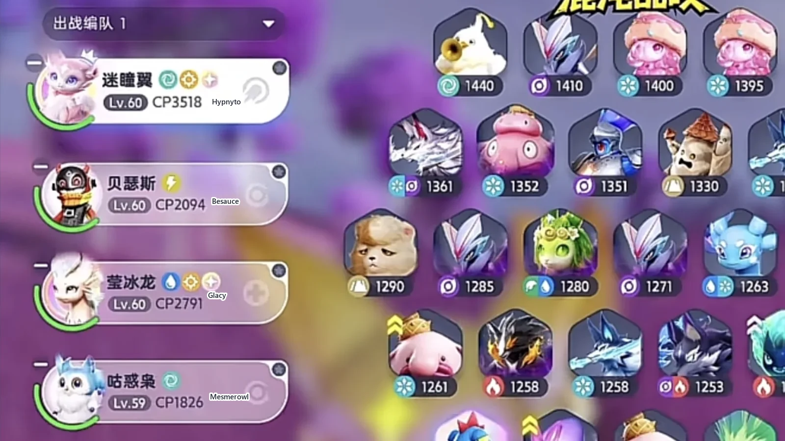
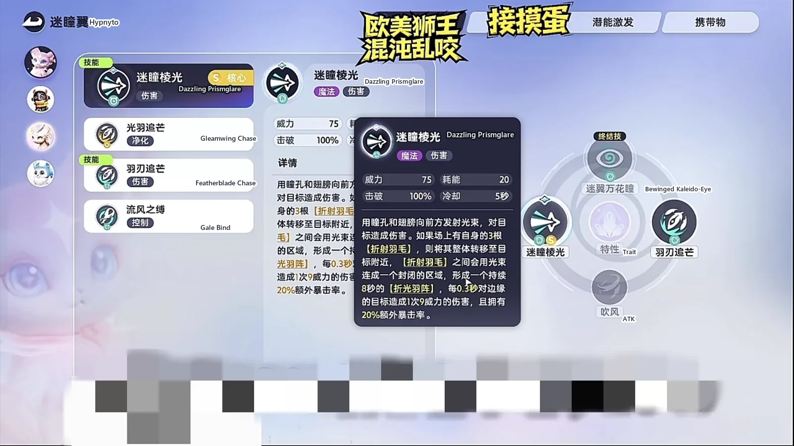
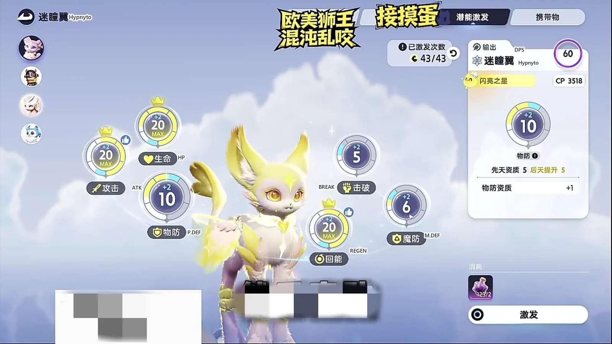
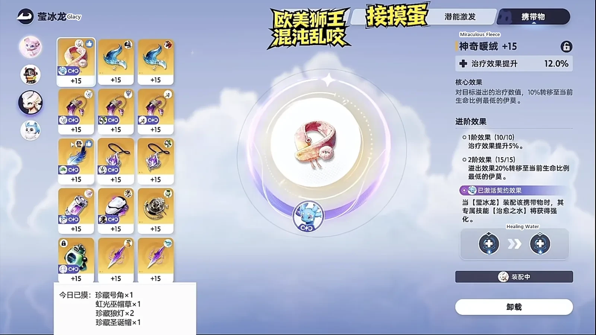
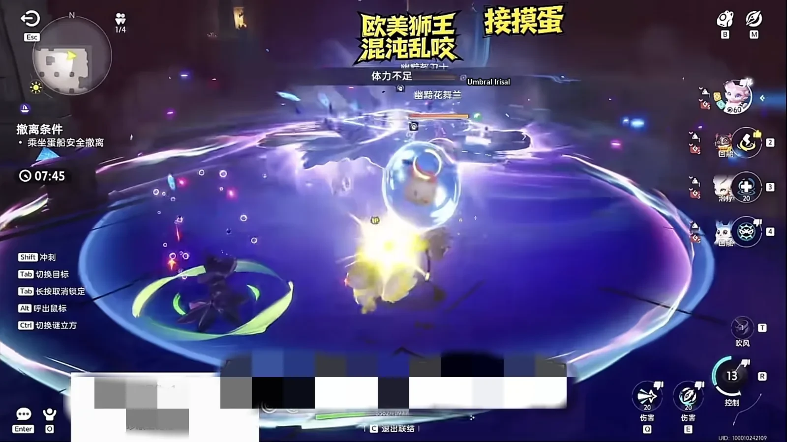
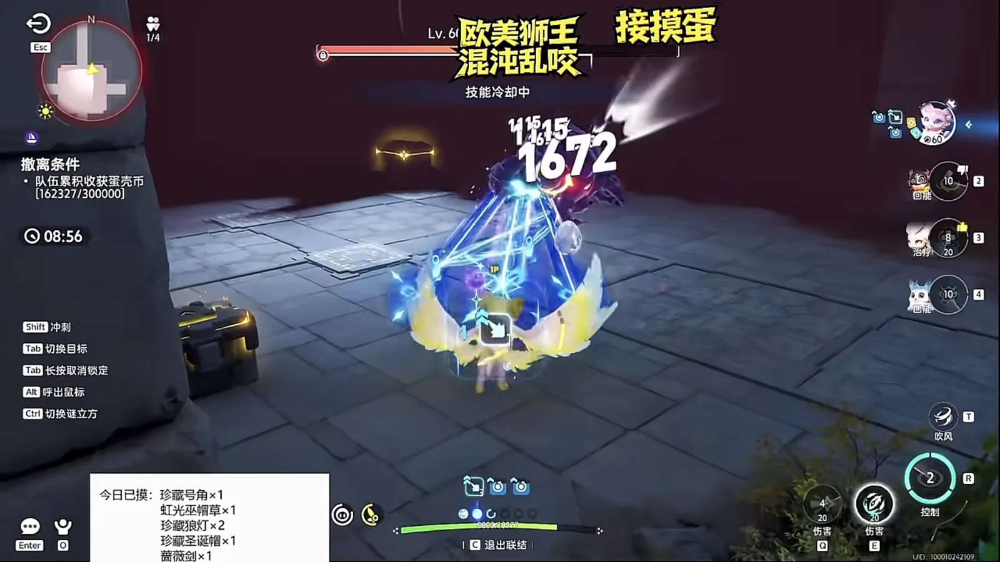

Home首页 / Guides攻略 / Aniimo Egg Heist Chaos: Hypnyto's Infinite Firepower《伊莫》抢蛋大作战混沌难度：迷瞳翼无限火力
Checked核对于 November 6, 20262026 年 11 月 6 日
Aniimo Egg Heist Chaos: Hypnyto's Infinite Firepower《伊莫》抢蛋大作战混沌难度：迷瞳翼无限火力
A Chaos-difficulty Operation: Egg Heist party built around Hypnyto: Mesmerowl turns crits into energy, Besauce and Glacy keep it coming, and the Ultimate never has to wait — plus Potential, held items and the opening order.一套新版本抢蛋大作战混沌难度的阵容：咕惑梟把暴击换成能量，贝瑟斯和莹冰龙把回能顶上去，迷瞳翼站在中间一直放大招 —— 再加上潜能、携带物和开打顺序。
In Operation: Egg Heist's Chaos difficulty the enemies come in waves, and every wave is harder than the last, so the party that wins is the one that clears fastest. This one does a single thing: it keeps Hypnyto's Ultimate and skills ready to fire. Three of the four slots exist to make that happen — Mesmerowl turns crits into energy, Besauce and Glacy push energy regeneration, and Hypnyto stands in the middle of it all, in the best damage environment the party can build.抢蛋大作战的混沌难度，怪是一波一波涌上来的，一波比一波硬，能把清怪时间压下去的就是好阵容。这套只做一件事：让迷瞳翼的大招和技能一直处在能放的状态。四个位置里三个在给它铺路 —— 咕惑梟把暴击换成能量，贝瑟斯和莹冰龙把回能顶上去，迷瞳翼自己站在中间，从头到尾泡在最高的输出环境里。
In practice it feels like this: throw the Ultimate whenever it is up, spam skills, and the energy bar barely empties.打起来的感觉就是：大招随便扔，技能猛放，蓝基本不会空。
After enough combinations, these four slots are more or less fixed. Swap one out and the whole loop has to be rebuilt.试过不少组合之后，这四个位置基本定死。换一只，整条循环就要重新起一遍。
Four slots, three of them clearing the way for the main damage四个位置，三个在给主 C 让路
- Hypnyto (Wind · DPS): every point of the party's damage sits on it.迷瞳翼（Hypnyto，风 · 输出）：队伍的输出全压在它身上。
- Mesmerowl (Wind · Regen): deals no damage; its passive turns crits into energy, so it is a pure accessory.咕惑梟（Mesmerowl，风 · 回能）：不打输出，靠被动把暴击转成能量，是个纯粹的挂件。
- Besauce (Lightning · Regen): the second energy slot.贝瑟斯（Besauce，电 · 回能）：另一个回能位。
- Glacy (Water · Ice · Heal): deals no damage, stacks HP, and has one job on the field — keep the energy coming.莹冰龙（Glacy，水 · 冰 · 治疗）：不打输出，堆生命值，站在场上的任务只有把蓝供上去。

The whole energy loop hangs on Mesmerowl's passive回能全靠咕惑梟那条被动
Mesmerowl does not need to cast anything. Its skills cost no energy at all, so casting is optional — better if you do, harmless if you do not.咕惑梟不需要放技能，它本身就是零蓝耗，放不放都行，放了更好，不放也无所谓。
What matters is the passive: every Wind-type crit restores 1.5 energy, and it can trigger once every 0.5 seconds — at most 3 energy a second. A crit is energy, and the entire loop is built on that. Hypnyto is Wind, so the party gets the passive for free.值钱的是被动：风属性每次暴击回 1.5 点能量，0.5 秒能触发一次，也就是一秒最多回 3 点。暴击就等于回蓝，整套循环全架在这条上面。迷瞳翼正好是风系，这条被动等于白拿。
Hypnyto's beam is almost always critting迷瞳翼的射线，几乎每一发都在暴击
The beam carries an extra 20% crit rate on its own, so almost every tick crits and the energy comes back alarmingly fast. Empty the bar and a few beams refill it.迷瞳翼的射线本身就额外带 20% 的暴击率，丢出去基本一直在暴击，回蓝快得吓人。蓝打空了，几发射线下去就又回来了。

Held item and Potential: max energy first携带物和潜能：回能先点满
Hypnyto carries the Capacitous Battery, and it should be enhanced as far as it will go. The battery at +15 pays out more than it looks: once enhanced it gives something every three seconds, while the beam can fire again every 0.3 seconds — and those hits roll the same 20% crit rate. Do not hesitate; push the enhancement.迷瞳翼带蓄能电池，能强化就往上强化。电池 +15，收益比看着大：强化之后每三秒给一次，而射线每 0.3 秒就能再打一下，这一下同样吃那 20% 的暴击率。所以别犹豫，使劲强化就对了。
For Potential, put points into Attack, Regen, HP, P.DEF and M.DEF, with Regen maxed at 20. Mesmerowl gets the same 20 points in Regen; it needs no star rank, no levels and no breakthrough.潜能这样点：攻击、回能、生命值、物防、魔防，回能点满 20 点。咕惑梟那边同样是 20 点回能，这只不用升星、不用升级、不用突破。

Glacy just stands there and supplies energy莹冰龙只管站着供蓝
Glacy stacks HP. It deals no damage in this party, and its only job on the field is to supply energy. The Spirited Feather is the best held item, but not having one is fine: Glacy barely casts, so an Auspicious Bell will do. What matters is the Regen roll — the bell rolls Regen, the feather rolls Regen, and the top roll is +20%, so the feather comes first; a bell standing in for it does not change the plan.莹冰龙堆生命值，它在这套里不打伤害，站在场上的任务只有一个，把蓝供上去。携带物能带蕴灵之羽最好，弄不到也无所谓：它基本不放技能，拿个招福铃铛也能凑合用。要的是回蓝那条属性 —— 铃铛加回蓝，羽毛也加回蓝，最高能加 20%，所以羽毛优先，没有羽毛拿铃铛顶着也不影响大局。

In the run: pull the whole wave, and start with Irisal实战：一波拉完，从花舞兰开始清
Once you are in the room the plan is simple: pull the entire wave at once and watch Hypnyto's damage and clear speed. I charge straight in and gather everything; the stamina bar empties and I can barely swing, but the party is why I can afford to pull like that.进了房间思路很简单，把这一波的怪一次拉完，重点看迷瞳翼的伤害和清怪效率。我直接冲进去拉怪，体力一下见底，砸都砸不动，但敢这么拉，是有底气的。
With type advantage, the next Ultimate hits Irisal for 44,000 and deletes it outright. Against something with no advantage, one Ultimate plus a round of small skills still clears it — just do not leave one behind.属性克制的情况下，下一个大招打花舞兰 4.4 万，直接秒；没有克制关系的怪，一个大招加一套小技能也能清完，记得别漏。

The boss as a quality check拿头目做质检
The last stop is the new version's boss. There is no type-advantage bonus in this fight at all, so its numbers are a clean read on the party's sustained damage. It can start rolling to dodge if it likes — the beam still lands.最后用新版本的头目走一遍。这一场没有任何克制伤害加成，整套阵容的持续输出是什么水平，看这一场的数值就清楚。对面开始翻滚躲也没用，射线照样打得到。

Where it sits in PvE放在 PVE 里是什么位置
Hypnyto is in a very good place in PvE right now. Against the Whirlbite (Water · DPS) water party, weapons and armor lose durability far less dramatically; against the Witchin (Dark · Grass · Regen) party, it does a clear step more damage.迷瞳翼现在的 PVE 环境还是非常好的。和卷齒鯊（Whirlbite，水 · 输出）那套水队比，武器防具的耐久掉得没那么夸张；和巫帽草（Witchin，暗 · 草 · 回能）那套比，伤害高出一截。
The downsides, out in the open短板也摆在明面上
The Ultimate has to land its damage before the control comes out, so it cannot be thrown around the way Witchin's little black-hole skill can. The battery is already equipped and both the Ultimate's recovery and its damage are covered, and this gap still does not close. The cooldown between two Ultimates is long, too: 14 seconds.大招必须先炸出伤害才能打出控制，做不到巫帽草那个黑洞小技能那样随手乱扔。电池已经带了，大招回复和大招伤害也补了，这一截还是补不上。两个大招之间的 CD 也长，14 秒。
One more thing: this is a party for the Egg Heist dungeon. It does not carry over to PvP.还有一点：这套是抢蛋大作战地宫里的打法，PVP 里用不上。
The opening order开打顺序
Pull on the way in and gather the wave where the beam can sweep it. When the energy bar empties, ignore it — keep firing and the crits will fill it back up. The moment the Ultimate comes off cooldown, spend it; do not hold it. Mesmerowl and Glacy need no input at all: standing on the field is already their job.进门先拉怪，把一波怪聚到射线扫得到的位置；蓝空了不用管，射线继续打，暴击会把能量顶回来；大招一转好立刻丢，别攒着；咕惑梟和莹冰龙全程不用操作，它们站在场上就已经在干活了。
More guides相关攻略
- Aniimo Egg Heist PvP: Hypnyto, and One Mantis for Each Opponent《伊莫》抢蛋大作战 PVP：迷瞳翼带两螳螂 — A four-slot PvP party for Operation: Egg Heist: Hypnyto carries the damage, Fulmintis answers Hypnyto, Ignitis answers Fulmintis, and Glacy keeps the main one standing — plus the habits that get the egg home.一套抢蛋大作战的 PVP 队伍：迷瞳翼打伤害，电刺螳螂专收迷瞳翼、淬刃螳螂专收电刺螳螂，莹冰龙保住主 C —— 再加上把蛋平安搬回去的那几个习惯。
- Operation: Egg Heist — The South Map, and 300,000 Out of a Solo Chaos Run《伊莫》抢蛋大作战：朝南这张图，单三混沌也能带满三十万 — One of the ten Egg Heist maps, walked end to end: the route in through the front door, which crates are worth opening, how to take Stellarys down through a wall, and how to carry 300,000 out while heavily loaded.十张抢蛋大作战地图里朝南的那张，从进门走到撤离：路线怎么认、哪些箱子值得开、星魔师怎么隔墙打，以及重度负重时怎么把三十万带出去。